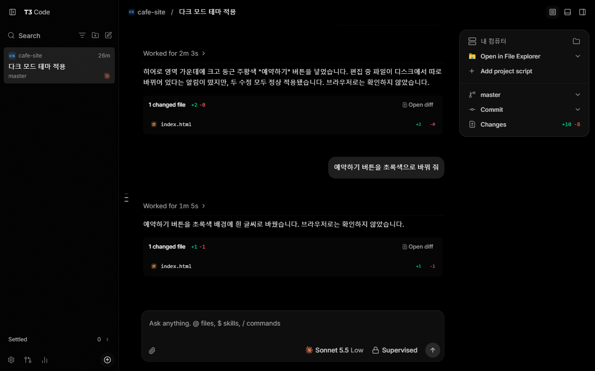
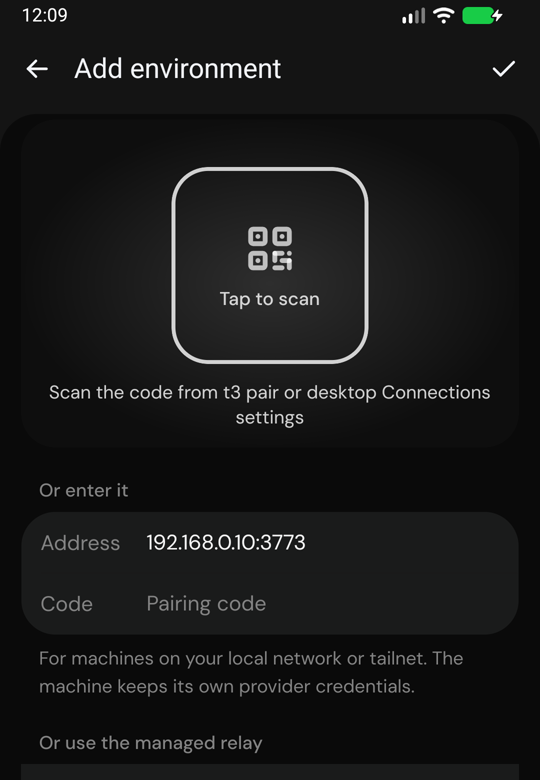
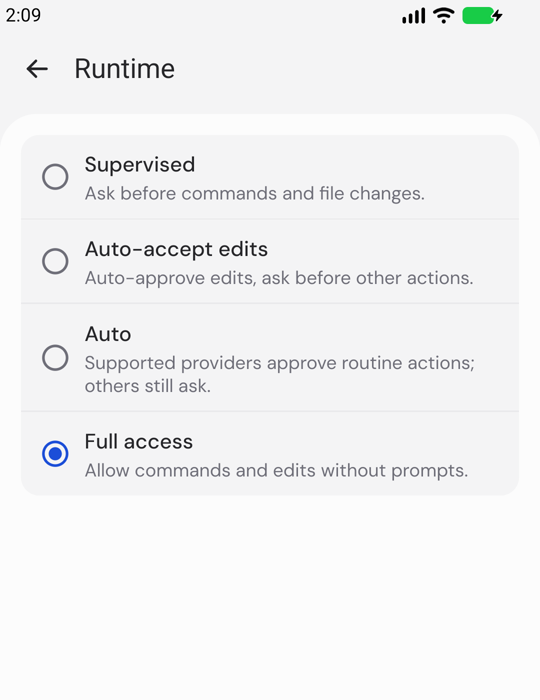

T3 Code는 내 컴퓨터에 깔린 클로드 코드(그리고 코덱스 등)를 폰 앱·웹·데스크톱 앱에서 조종하는 무료 오픈소스(MIT)예요. 일은 집 컴퓨터가 하고, 폰은 리모컨이에요. 쓰던 클로드 구독을 그대로 써요. 아래 폰 화면은 저희가 11/7 윈도우 PC에서 T3 Code 서버를 돌리고 공식 안드로이드 앱을 연결해 직접 찍은 화면이에요. 설치 프로그램(winget·brew)·T3 Connect 로그인 단계는 공식 설치 문서 기준이에요.
데스크톱 앱: 윈도우 PowerShell에 `winget install T3Tools.T3Code`, 맥 터미널에 `brew install --cask t3-code`. 명령어 판(서버만): 윈도우 `irm https://t3.codes/install.ps1 | iex`, 맥·리눅스 `curl -fsSL https://t3.codes/install.sh | sh` → `t3` 실행. 한 번만 써 보려면 `npx t3@latest`(Node.js 필요). 클로드 코드는 그 컴퓨터에 먼저 설치·로그인해 둬요.
처음 열면 설정 마법사가 컴퓨터 → 에이전트 → 프로젝트 순서로 물어요. 에이전트 칸에 Claude가 'Ready'로 뜨면 준비 끝. 'Add project › Local folder'로 작업할 폴더를 골라요. (Claude가 안 보이면: 그 컴퓨터에서 `claude auth login`을 했는지, 설정 › Providers의 Binary path를 확인)

App Store·Google Play에서 'T3 Code'를 받아요(공식 README의 스토어 링크: apps.apple.com/us/app/id6787819824 · play.google.com/store/apps/details?id=com.t3tools.t3code). 데스크톱·웹 앱의 설정 › About › Mobile app에도 스토어 링크와 QR이 있어요(공식 문서).
컴퓨터: 데스크톱 앱 설정 › Sharing & access에서 Network access를 켜고 페어링 링크(QR)를 만들어요. 명령어 판이면 `t3 serve --lan`으로 띄우고 `t3 pair`. 폰: 앱 첫 화면 'Add environment' → QR을 찍거나, 컴퓨터 주소(예 192.168.0.10:3773)와 페어링 코드를 넣고 오른쪽 위 ✓. 연결되면 'on <컴퓨터 이름>'이 떠요.

새 대화는 처음 기본값이 'Full access'(허락 안 묻고 바로 실행)예요. 폰에서 허락을 누르고 싶으면 입력칸 오른쪽 모델 버튼 › Runtime › 'Supervised'(명령·파일 바꾸기 전에 물어봄)를 고르고 Save. 기본값은 설정 › Threads › New threads › Permissions에서 바꿔요.

프로젝트를 고르고 입력칸에 할 일을 한 줄 써서 보내요. 클로드가 파일을 만들거나 명령을 돌리려 하면 'APPROVAL NEEDED' 카드가 떠요 → 'Allow once'(이번만) / 'Allow session'(이 대화 동안) / 'Decline'(거절). 거절하면서 이유를 적어 보내면 클로드가 그 말을 듣고 다시 해요(공식 문서). 끝나면 바꾼 파일 수가 뜨고, 이어서 한 줄 더 보내면 같은 대화로 이어 가요.
T3 Connect: 컴퓨터 데스크톱 앱 설정 › Sharing & access에서 로그인하고 T3 Connect를 켜요(명령어 판은 `t3 up` → T3 Connect 선택). 폰도 같은 계정으로 로그인하면 공유기 설정 없이 밖에서 연결돼요. 알림: 폰 설정 › Notifications › Device Notifications를 켜면 '끝남·실패·허락 필요·질문'이 오면 알림이 오고, 누르면 그 대화가 열려요. 알림은 T3 Connect로만 와요(같은 와이파이 직접 연결만으로는 안 옴).
11/7 윈도우 PC(클로드 Sonnet 5.5, Supervised) · 폰은 안드로이드 앱. ① 폰에서 '점심 메뉴 룰렛 만들어 줘' → 집 컴퓨터 클로드가 index.html 한 파일로 만들기 시작 → ② 폰에 'APPROVAL NEEDED · file-change · index.html' → Allow once → 약 1분 40초 뒤 '+260줄'로 끝, 김치찌개·된장찌개·비빔밥 등 10칸 룰렛 → ③ 같은 대화에 '마라탕도 넣어 줘' → 허락 한 번 더 → 약 1분 뒤 마라탕 칸이 생김.
PowerShell에
winget install T3Tools.T3Code
터미널에
brew install --cask t3-code
집 컴퓨터 터미널에
claude auth login
집 컴퓨터 터미널에
t3 serve --lan
서버가 켜진 상태에서 다른 터미널에
t3 pair
폰 입력칸에
점심 메뉴 룰렛 만들어 줘. index.html 한 파일로.
도움이 되셨다면
@ai.antenna.kr
에서 바로 쓰는 AI 활용법을 계속 올립니다.